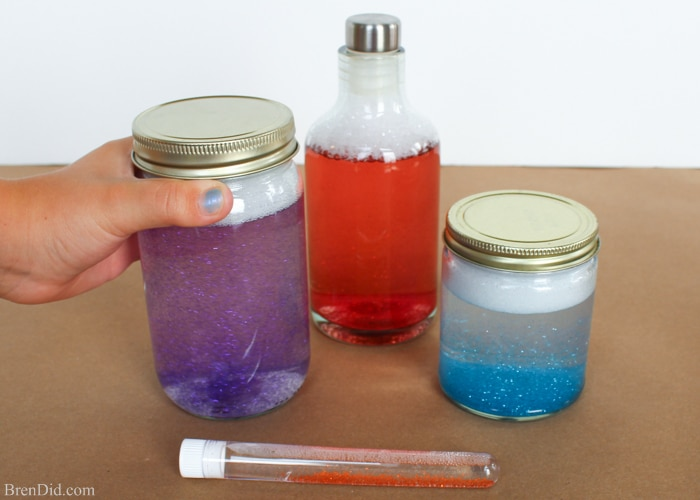

A fun physics experiment!
Estimated Amount of Time: 4 minutes
Click here for the directionsYou will create a water vortex that looks like a mini tornado! You can do this because of centrifugal force which makes the water move in a spiral. Centrifugal force is a force that acts outward, away from the center of rotation, and is felt by objects moving on a curved path.
☰